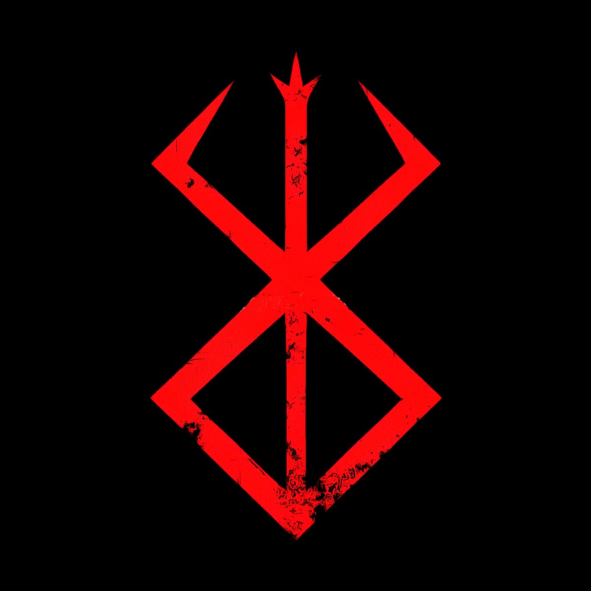
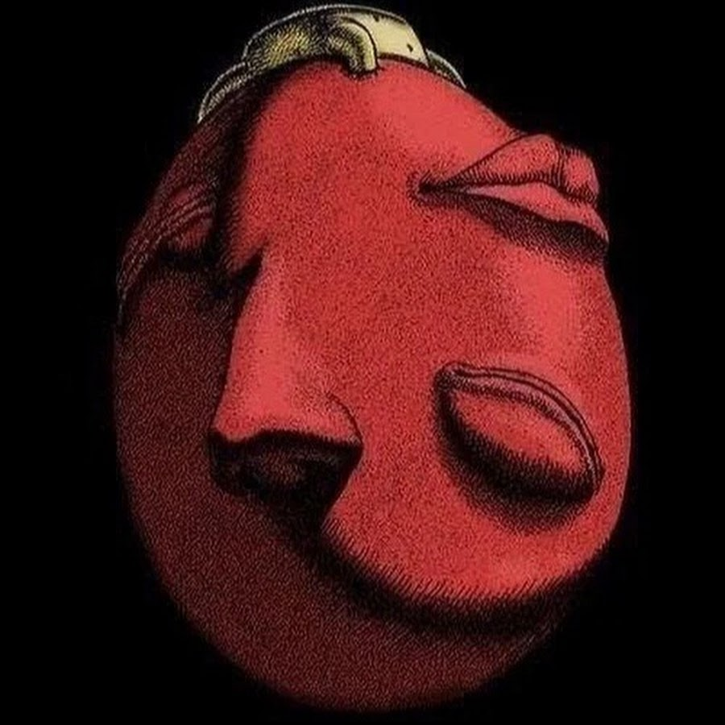
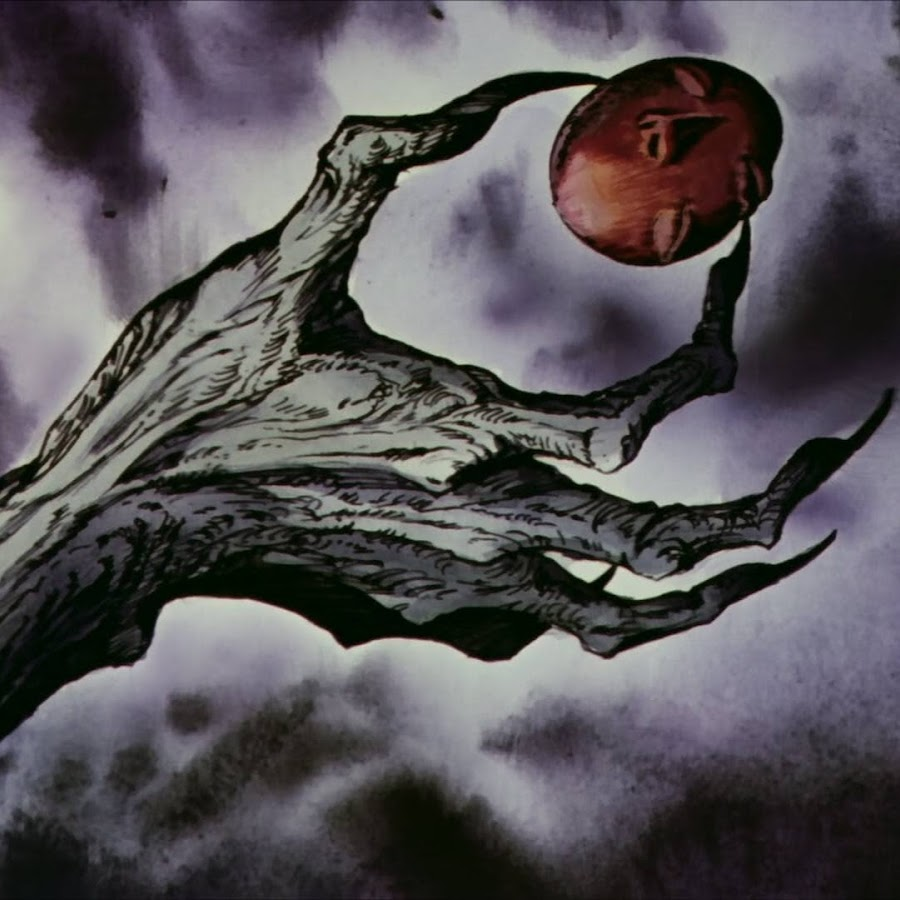

Клеймо жертвы
Отметина, что тянет к свершившемуся роковому узлу.
Сайт содержит сцены насилия и триггерные темы (Берсерк). Нажимая «Войти», вы подтверждаете, что вам 18+.
Клеймо, Бехелит, Железный Коготь — знаки, что преследуют героев сильнее любого меча.

Отметина, что тянет к свершившемуся роковому узлу.

«Яйцо короля» — ключ к двери, которую не открывают без цены.

Судьба сжимает кольцо — и не отпускает даже мёртвых.